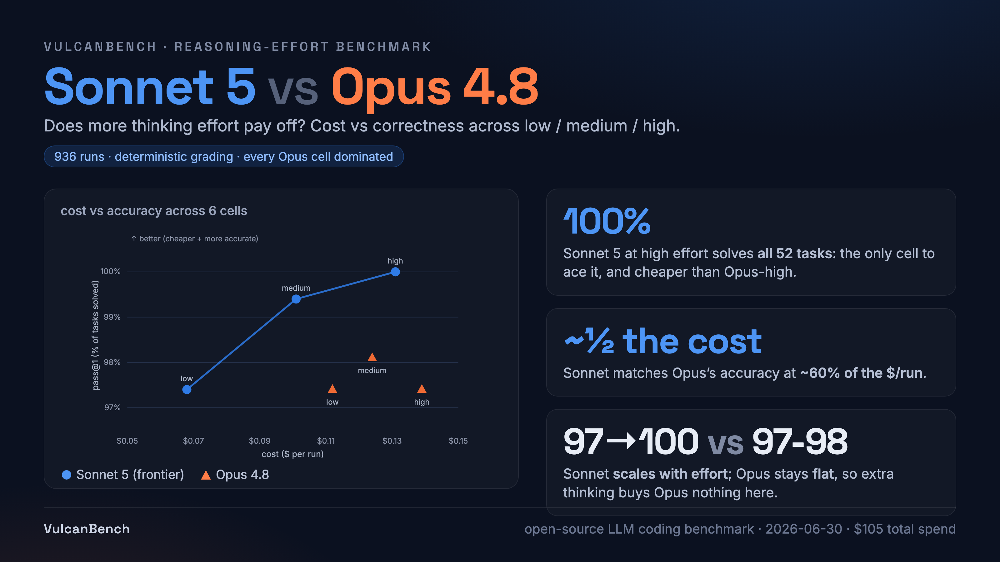

Holding the task set fixed and sweeping the reasoning-effort dial turns a saturated benchmark into a discriminating one for free: the low-effort dropoffs below the high-effort ceiling are the signal. Sonnet 5 scales cleanly with effort, from 97 percent at low to 100 percent at high, and matches Opus 4.8's accuracy at roughly 60 percent of the cost per run. Opus stays flat across effort, so extra thinking buys it nothing on this suite.

Sonnet 5 at high effort solves all 52 tasks, the only cell to ace the suite, and does so more cheaply than Opus at high effort.
Effort scales Sonnet, not Opus. Sonnet climbs 97 to 100 percent as effort rises; Opus holds at 97 to 98 percent regardless, so the extra thinking budget is wasted on it here.
The effort dial is a free discriminator. Rather than authoring harder tasks, starving the thinking budget re-introduces separation on a suite the frontier had otherwise saturated.
Two models across three effort levels, three repeats each, over the 52-task v1 suite, graded deterministically in a Docker sandbox. 936 runs total. The full report is available below.
{kind=link}